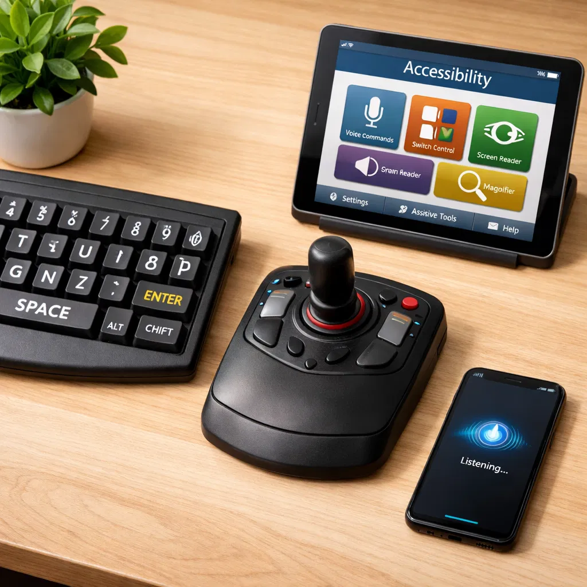

Paraplegia
Perda total das funções motoras dos membros inferiores.
Uma análise aprofundada sobre conceito, desafios, impactos na Gestão de Pessoas, propostas de inclusão e a inclusão como vantagem competitiva.
A compreensão da deficiência física evoluiu do modelo médico, centrado na lesão ou limitação individual, para o modelo biopsicossocial, que reconhece a interação entre condição de saúde, barreiras contextuais e participação social.
Em consonância com a Lei Brasileira de Inclusão, considera-se pessoa com deficiência aquela que tem impedimento de longo prazo de natureza física, mental, intelectual ou sensorial, em interação com uma ou mais barreiras, podendo ter obstruída sua participação plena e efetiva na sociedade em igualdade de condições com as demais pessoas.
O Decreto nº 3.298/1999 caracteriza a deficiência física como alteração completa ou parcial de um ou mais segmentos do corpo humano, acarretando comprometimento da função física. Essa definição abrange condições como paraplegia, tetraplegia, hemiplegia, amputações e paralisia cerebral.
Perda total das funções motoras dos membros inferiores.
Perda das funções motoras dos quatro membros.
Perda das funções motoras de um lado do corpo.
Perda das funções motoras de um único membro.
Ausência total ou parcial de um membro.
Comprometimento motor decorrente de lesão cerebral.
Foco na lesão ou limitação como problema individual.
A sociedade cria as barreiras, não a deficiência.
Interação entre saúde, funcionalidade e fatores contextuais, em diálogo com a CIF/OMS.
Apesar dos avanços legais, a inclusão efetiva ainda enfrenta barreiras físicas, tecnológicas, comportamentais, comunicacionais e culturais. A presença da pessoa com deficiência no trabalho depende não apenas da contratação, mas das condições concretas de participação e permanência.
Os impactos atravessam todo o ciclo de gestão, do recrutamento à avaliação de desempenho. A inclusão exige revisão de práticas, critérios e instrumentos, sempre com foco em equidade e acessibilidade.
É necessário revisar linguagem de vagas, etapas de seleção, canais de candidatura e critérios de avaliação, garantindo acessibilidade e reduzindo vieses capacitistas.
O ingresso de novos profissionais demanda preparação do ambiente, sensibilização da equipe e provisão das adaptações necessárias desde o primeiro dia.
Treinamentos, trilhas de aprendizagem e oportunidades de progressão precisam estar disponíveis em formatos acessíveis e com suporte adequado.
A avaliação deve ser contextualizada, justa e livre de paternalismo ou subestimação, reconhecendo resultados e condições reais de trabalho.

Em ambientes organizacionais, essas tecnologias não funcionam apenas como recursos complementares. Elas podem viabilizar a execução de tarefas, ampliar autonomia, reduzir fadiga e favorecer participação mais equitativa em atividades administrativas, comunicacionais e digitais.
Quando combinadas com ajustes no posto de trabalho e com cultura organizacional inclusiva, essas soluções tendem a tornar o processo de inclusão mais consistente e sustentável.
O Magazine Luiza é frequentemente citado como referência nacional em diversidade e inclusão. No campo institucional, a empresa formalizou uma Política de Diversidade e Inclusão em 2022, com diretrizes voltadas a comportamentos, práticas e responsabilidades internas relacionadas ao tema.
Na comunicação pública da companhia, a pauta também aparece associada à cultura organizacional e aos benefícios direcionados a colaboradores com deficiência, incluindo bolsas de estudo e subsídios para cuidados e desenvolvimento pessoal.
No ecossistema digital, o Magalu também é mencionado em materiais de mercado por iniciativas ligadas à acessibilidade e à experiência de pessoas com deficiência em seus canais digitais, o que reforça a conexão entre inclusão, inovação e relacionamento com clientes e equipes.
A política corporativa aprovada em 2022 indica que diversidade e inclusão passaram a ser tratadas com diretrizes explícitas, o que tende a dar mais estabilidade às ações internas.
Os materiais públicos do grupo mencionam benefícios específicos para colaboradores com deficiência, sinalizando reconhecimento de necessidades concretas de permanência e desenvolvimento.
O caso é útil para a pesquisa porque permite observar a inclusão não apenas como prática de RH, mas também como valor institucional e como elemento da experiência digital.
A inclusão de pessoas com deficiência física no ambiente organizacional transcende o cumprimento formal de cotas. Trata-se de compromisso ético, responsabilidade social e estratégia de negócio capaz de ampliar inovação, engajamento, retenção de talentos, reputação institucional e produtividade.
Equipes diversas tendem a produzir soluções mais criativas e perspectivas mais amplas sobre problemas complexos.
Ambientes inclusivos fortalecem pertencimento, confiança e comprometimento com os objetivos organizacionais.
Políticas inclusivas reduzem rotatividade e favorecem permanência com qualidade no trabalho.
Organizações inclusivas ampliam valor de marca, aderência a agendas ESG e legitimidade social.
Este projeto foi desenvolvido como trabalho de extensão para a Escola Superior de Publicidade e Marketing (ESPM), com o objetivo de produzir uma pesquisa bibliográfica abrangente sobre deficiência física no contexto organizacional.
Abaixo estão os membros do grupo responsáveis por este trabalho.
[Empresa]
[Cargo/Posição]
[Empresa]
[Cargo/Posição]
[Empresa]
[Cargo/Posição]
[Empresa]
[Cargo/Posição]
[Empresa]
[Cargo/Posição]
Estrutura estática, sem dependência de scripts do Manus, com foco em contraste, legibilidade, responsividade e semântica adequada para publicação simples em GitHub Pages.
Todos os links e seções principais são acessíveis via teclado, com link de salto para o conteúdo e ordem lógica de navegação.
Organização semântica com H1, H2 e H3 para facilitar navegação por leitores de tela e compreensão estrutural da página.
As imagens principais possuem atributo alt descritivo, preservando o acesso ao conteúdo visual essencial.
O conteúdo foi reorganizado em HTML simples, sem roteamento em SPA, o que tende a melhorar a estabilidade em leitores de tela e em hospedagem estática.
Esta versão foi desenhada para funcionar diretamente no GitHub Pages, reduzindo dependências externas e pontos de falha de carregamento.
Nota sobre acessibilidade: esta página foi desenvolvida com foco em design inclusivo e publicação estável. Se você encontrar qualquer dificuldade de acesso ou identificar necessidade de melhoria, escreva para souza.danilo@live.com.